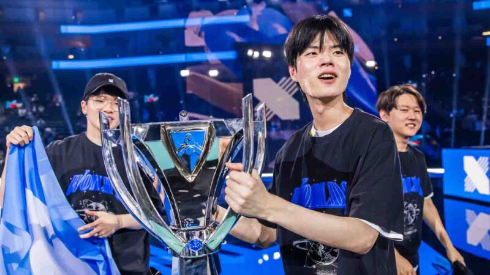
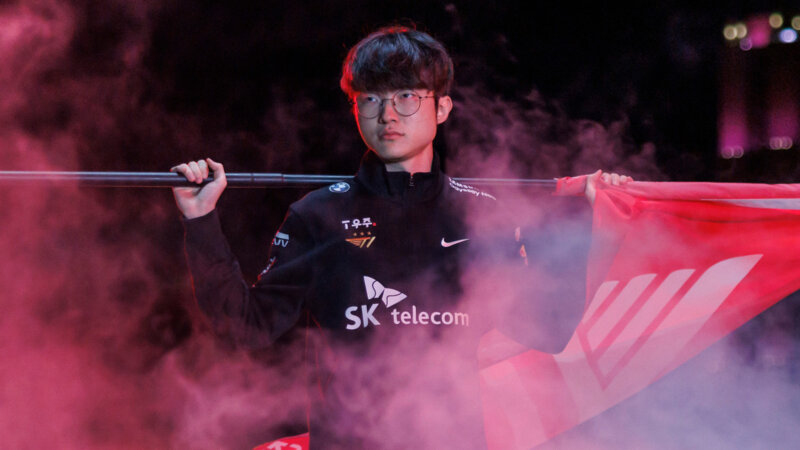
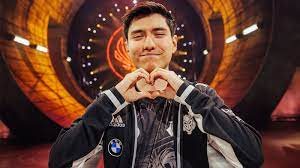
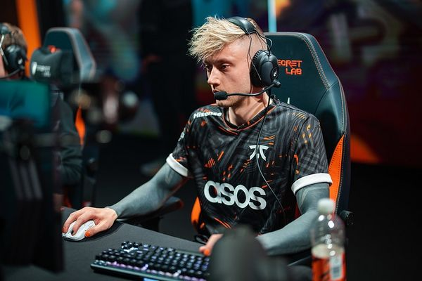
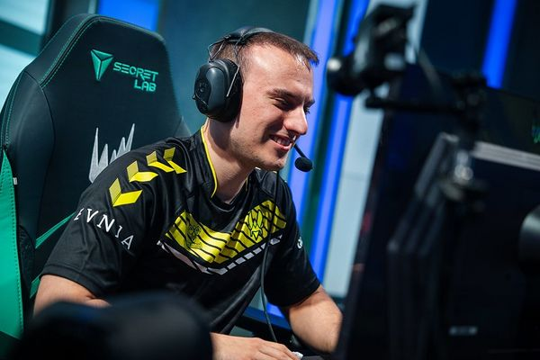
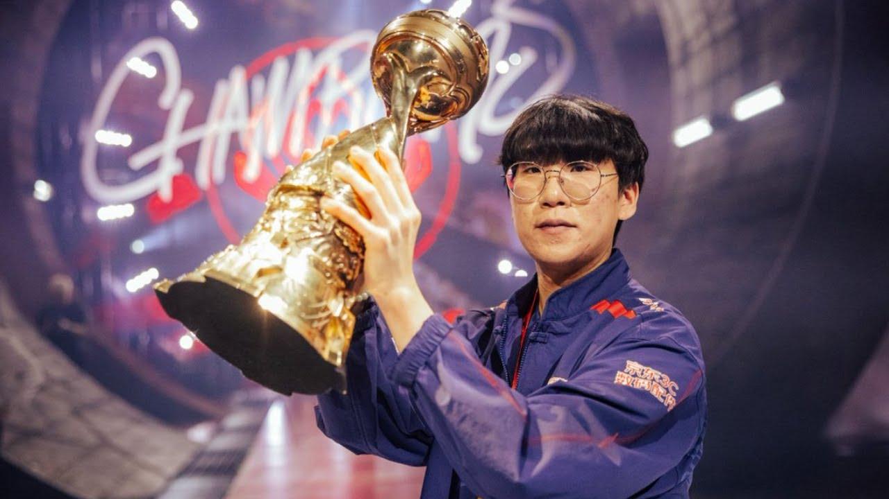
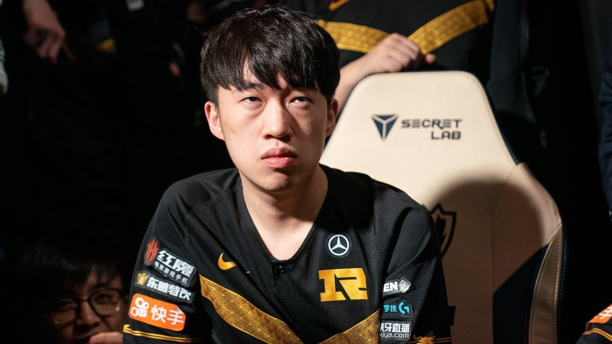
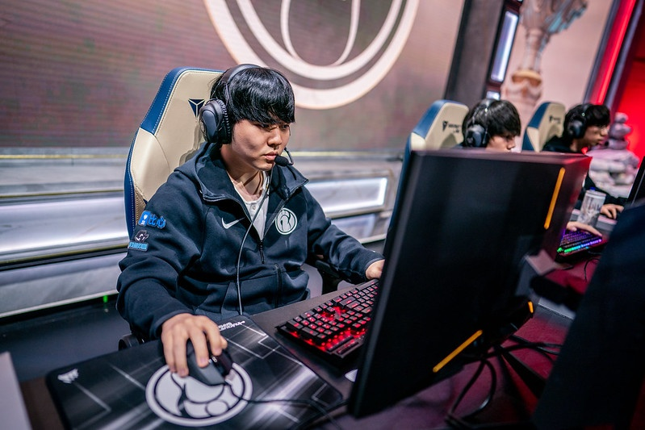
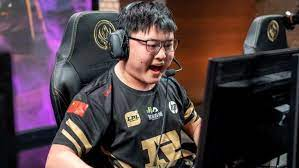

ADC “Deft”. Always considered a strong ADC player and one of the best-performing players in the teams he played in, he was never able to make great international results.One of the best players on any team he went to. He went from Challengers Korea to the Worlds finals in less than a year, and then beat Faker the following year to become World champion.

Results aside, there isn’t a pro that even comes close to him, especially when we refer to being at the pinnacle of professional League of Legends.

He was one of the most consistent players on the roster and showcased different playstyles and great adaptability, depending on the meta.

When he joined Fnatic in 2014, the team found immediate success by winning the EU LCS Spring Split.

Beyond his nine domestic titles, he is on the very short list of players (alongside his one-time teammate Zven) to win both the LEC and LCS.

Ruler made the iconic play to clinch the World Championship for Samsung Galaxy, catching Faker out of position to initiate the series-winning teamfight.

A five-time domestic champion and three-time international winner, Xiaohu’s longevity is particularly impressive, while his strength as a player is impossible to ignore.

Rookie spent the strong majority of his career in China and has blossomed into the greatest mid laner in the history of the region over the span of his career.

With back-to-back Worlds final appearances to start his career and an eventual international title at MSI 2018, Uzi is one of the most accomplished-over-time players in League history.